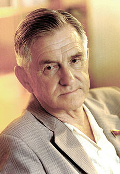
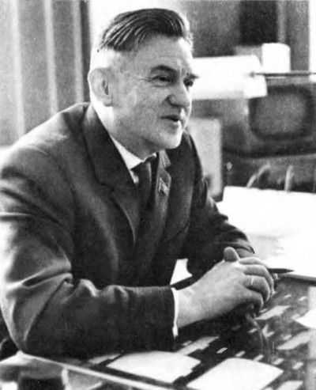

Антонов Олег Костянтинович — український радянський літакобудівельник російського походження, один із провідних авіаконструкторів СРСР. Доктор технічних наук, академік АН УРСР і АН СРСР, Герой Соціалістичної Праці.
З молодих років захоплювався авіабудуванням, займався у шкільному гуртку любителів авіації. 1924 року під час навчання в Саратовському індустріальному технікумі збудував свій перший планер. 1925-го вступив на машинобудівний факультет Ленінградського Політехнічного Інституту, який закінчив 1930.
З молодих років захоплювався авіабудуванням. 1924 року під час навчання в Саратовському індустріальному технікумі збудував свій перший планер. 1925-го вступив на машинобудівний факультет Ленінградського Політехнічного Інституту, який закінчив 1930.
Створив близько 30 типів планерів. У 1938–1940-их працював провідним інженером в ДКБ (дослідно-конструкторське бюро) О. С. Яковлєва, у 1940–1941 — на заводі «Червоний льотчик» над легким літаком зв'язку, у 1943–1946 — 1-й заступник головного конструктора ДКБ Яковлєва. У 1945–1946 — начальник філіалу цього ДКБ у Новосибірську. З 1946 — головний конструктор ДКБ (1952 перенесено в Київ), що було організоване на базі цієї філії, у 1967–1984 — генеральний конструктор.
У післявоєнні роки під керівництвом Антонова розроблено транспортні літаки Ан-8, Ан-12, Ан-22, Ан-26, Ан-32, Ан-72, Ан-124, багатоцільові літаки Ан-2, Ан-14, Ан-28, що здатні базуватися на непідготованих смугах довжиною до 550 метрів, пасажирські літаки Ан-10, Ан-24, цільнометалеві планери А-10, А-11, А-13, А-15, мотопланер Ан-13, ракетний планер А-17, безпілотний літальний апарат і дельтаплани серії «Славутич».
Жив у Києві. Похований на Байковому кладовищі в Києві.